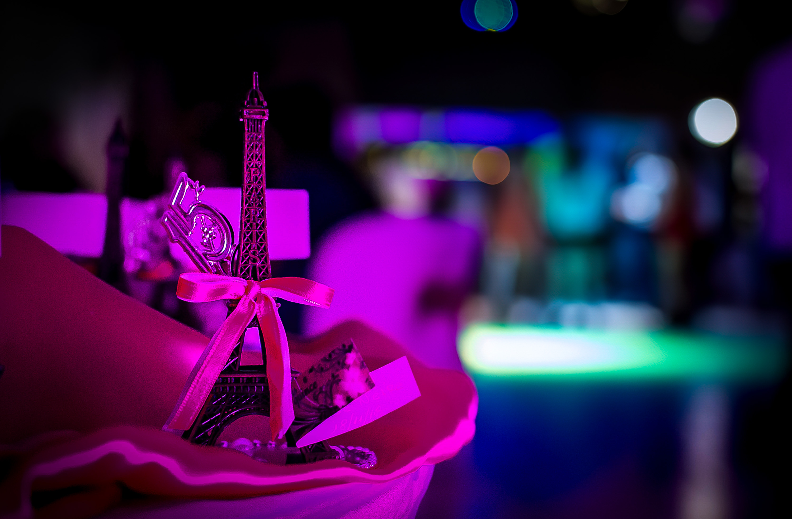

Fotografía & video de eventos · Buenos Aires
Soy Jota. Desde 1998 cubro quince años, casamientos y fiestas, buscando el instante justo entre el flash y el movimiento — donde queda la energía real de la noche.
